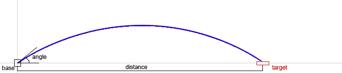

In a typical tactical shooting game, trajectory shots are fired from a base to a target. Given the angle of the aim and power of the shot, we are interested in the distance the projectile will travel.
Standard rules of physics apply. A shot is fired from the center of the base at the initial velocity specified, in meters per second. The angle determines the horizontal and vertical components of the velocity and is supplied in degrees. The target is on the same level as the base. Gravity supplies a constant downward acceleration of 9.81 meters per second squared. There is no wind or any friction.
The input file DATA1.txt will contain five lines, each in angle power format. The angle is in degrees, an integer 0 <= d <= 90. The power is in meter per second, an integer 0 <= p <= 100.
The output file OUT1.txt will contain five lines, each stating the expected distance, rounded to the nearest integer.
10 100 25 100 40 100 60 100 85 100
349 781 1004 883 177